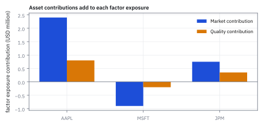
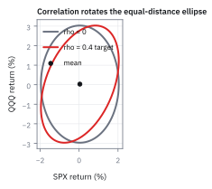
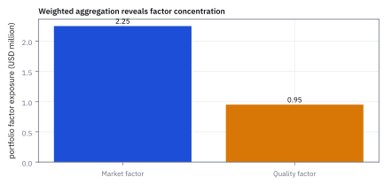

7.1 The Multivariate Normal Density
รูปทรงเดียวที่บอก mean, covariance และ joint probability ของ returns
หุ้นสองตัวผันผวนวันละ 2% เท่ากันและ correlation 0.82 วันนี้ตัวแรกขึ้น 3% ตัวที่สองลง 3% แต่ละตัวขยับแค่ 1.5 เท่าของความผันผวน วันนี้แปลกแค่ไหน?
เฉลย: แปลกมาก เมื่อคิด correlation ด้วย ระยะที่ถูกต้องคือ √(4.5/0.18) = 5 เท่ากับเหตุการณ์ 5σ วันแบบนี้เกิดราว 1 ใน 270,000 วัน ส่วนวันที่ทั้งคู่ขึ้น 3% พร้อมกันมีระยะแค่ 1.57 เกิดราว 29% ของวัน
Multivariate Normal density คือแบบจำลองรูประฆังหลายมิติที่เก็บค่าเฉลี่ยและการขยับร่วมไว้พร้อมกัน ใช้คำนวณความน่าจะเป็นของหลายตัวแปรที่สัมพันธ์กัน
ศัพท์ที่ใช้ในหัวข้อนี้
- Multivariate Normal (MVN) distribution
- distribution ของ vector ที่ทุก linear combination มี Normal distribution ใช้เป็น joint return model ที่สรุปด้วย mean vector และ covariance matrix
- Normal distribution
- distribution รูประฆังที่กำหนดด้วยค่าเฉลี่ยและ variance ใช้เป็น building block ของ MVN และ return scenario
- probability density function (PDF)
- density ที่ต้อง integrate เหนือพื้นที่จึงได้โอกาสใช้แสดงความสูงของ joint distribution
- covariance matrix
- matrix ที่เก็บ variance และ co-movement ของผลตอบแทนใช้กำหนดทิศทางและความกว้างของ MVN ellipse
- correlation
- covariance ที่หารด้วย standard deviations ของทั้งสองตัว จึงอยู่ระหว่าง -1 ถึง 1 ใช้สื่อความแรงและทิศของ co-movement โดยไม่ติดหน่วย
- variance
- ค่ากระจายรอบค่าเฉลี่ยที่ใช้วัดความกว้างของ return distribution และกำหนด diagonal ของ covariance matrix
- spread
- ขนาดการกระจายของผลตอบแทนรอบค่าเฉลี่ยใช้ตีความความกว้างของ density และความผันผวนในหน่วย return
- factor
- ตัวแปรร่วมที่ขับเคลื่อนผลตอบแทนหลายสินทรัพย์ ใช้สรุป source ของ co-movement ใน joint model
- volatility
- ขนาดความผันผวนที่อ่านจาก standard deviation ใช้แปลง spread ของ return distribution เป็น risk number
- standard deviation
- รากที่สองของ variance ใช้รายงาน spread กลับมาในหน่วย return/day ที่ trader อ่านได้
- Mahalanobis distance
- ระยะจากค่าเฉลี่ยที่วัดหลังปรับตามความผันผวนและ correlation ของข้อมูลแล้ว ใช้บอกว่าจุดหนึ่งน่าประหลาดใจแค่ไหน เป็นหลักของระบบจับความผิดปกติในเดสก์ความเสี่ยง
- SPX
- ดัชนี S&P 500 ของตลาดสหรัฐฯ ใช้เป็นผลตอบแทนตัวแรกใน joint model
- QQQ
- กองทุนที่ติดตาม Nasdaq-100 ของตลาดสหรัฐฯ ใช้เป็นผลตอบแทนตัวที่สองใน joint model
สัญลักษณ์ที่ใช้ในหัวข้อนี้
| สัญลักษณ์ | ความหมาย | หน่วย |
|---|---|---|
| $r$ | vector ของ SPX และ QQQ returns | decimal return/day |
| $\mu$ | mean vector ของ $r$ | decimal return/day |
| $\Sigma$ | covariance matrix ของ $r$ | return²/day² |
| $d$ | จำนวน dimensions ของ return vector | นับสินทรัพย์ |
| $f(r)$ | MVN joint PDF | $1/\text{return}^d$ |
ที่มาที่ไป: ขยายระฆังคว่ำให้รับหลายตัวพร้อมกัน
ระฆังคว่ำในบทที่หนึ่งจัดการได้ทีละตัว แต่พอร์ตต้องการมากกว่านั้น คือต้องการรูปทรงเดียวที่บอกทั้งค่าเฉลี่ยของแต่ละตัว ความกว้างของแต่ละตัว และความเกี่ยวพันทุกคู่ พร้อมกัน
สิ่งที่ทำให้การขยายนี้คุ้มค่าคือมันเก็บสมบัติดี ๆ ของต้นฉบับไว้ได้หมด ผลรวมถ่วงน้ำหนักของมันยังเป็นระฆังคว่ำ การมองทีละตัวก็ยังเป็นระฆังคว่ำ และการอัปเดตเมื่อรู้ข้อมูลใหม่ก็ยังเป็นระฆังคว่ำ
สมบัติสามข้อนี้เองที่ทำให้มันกลายเป็นแบบจำลองมาตรฐานของงานความเสี่ยงทั้งอุตสาหกรรม เพราะทุกอย่างที่ต้องคำนวณมีสูตรปิดหมด
ราคาที่จ่ายคือหางที่บางเกินจริง ซึ่งเป็นข้อจำกัดที่ต้องรู้ไว้ตลอดเวลาที่ใช้มัน
ความเป็นมา: จากปัญหาทางพันธุกรรมของ Galton สู่แบบจำลอง Multivariate Normal
ราว ๆ ทศวรรษ 1880 Francis Galton ศึกษาการถ่ายทอดลักษณะทางพันธุกรรมของสิ่งมีชีวิต โดยเฉพาะความสูงของพ่อแม่เปรียบเทียบกับบุตร ก่อนหน้านั้นนักคณิตศาสตร์สายดาราศาสตร์ เช่น Gauss และ Laplace มักตั้งสมมติฐานว่าความคลาดเคลื่อนในแต่ละมิติเป็นอิสระ (independence) ต่อกัน ซึ่งเหมาะกับการวัดตำแหน่งดวงดาว แต่ใช้ไม่ได้กับสิ่งมีชีวิตหรือราคาสินทรัพย์ที่มีความเชื่อมโยงกัน
เมื่อ Galton พล็อตจุดข้อมูลความสูงร่วมกัน เขาค้นพบว่าเส้นระดับ density ไม่ได้เป็นวงกลม แต่เป็นรูปวงรีเอียง และค่าของรุ่นลูกมีแนวโน้มร่นกลับเข้าหาค่าเฉลี่ยเสมอ ปรากฏการณ์นี้กระตุ้นให้ Karl Pearson พัฒนาสูตรทางคณิตศาสตร์อย่างเป็นทางการในปี 1896 โดยนิยาม correlation coefficient และสร้าง density function หลายมิติบนพื้นฐานของ covariance matrix ขึ้นมา
การค้นพบนี้ได้เปลี่ยนกระบวนทัศน์ทางสถิติจากการพิจารณาตัวแปรเดี่ยวแยกขาดจากกัน มาสู่การอธิบายระบบที่มีความเกี่ยวพันกันทั้งยวง ซึ่งต่อมากลายเป็นเสาหลักของทฤษฎีการเงินสมัยใหม่ ที่ช่วยให้นักลงทุนสามารถวัดความเสี่ยงของ portfolio ที่ประกอบด้วยสินทรัพย์นับร้อยตัวพร้อมกันได้
โจทย์ joint return model
ให้ $r$ เป็น vector ของ SPX กับ QQQ daily returns ใน decimal ต่อวัน และต้องการ density ที่ให้ทั้ง centre, spread และ co-movement ในมิติเดียวกัน MVN เป็น model ที่ใช้ mean vector $\mu$ กับ covariance matrix $\Sigma$ เป็น parameter ของผลตอบแทนตลาดสหรัฐฯ
ขั้นที่ 1 — ที่มาและการสร้าง MVN density จาก Standard Normal
แทนที่จะจำสูตร density สำเร็จรูป ขั้นนี้สร้างขึ้นจากจุดเริ่มต้นที่ง่ายที่สุด นั่นคือ vector ของ Standard Normal ที่เป็นอิสระต่อกัน แล้วแปลงเชิงเส้นผ่าน matrix เพื่อกำหนด mean vector และ covariance matrix ตามต้องการ
เริ่มต้นจาก vector $Z$ ขนาด $d$ มิติ ที่แต่ละแกนเป็น Standard Normal อิสระต่อกัน joint density จึงเขียนเป็นผลคูณของแต่ละแกน และรวมเลขชี้กำลังเป็นผลบวกกำลังสอง $-\frac{1}{2} z^\top z$
เมื่อแปลงพิกัด $r = \mu + Lz$ จุดศูนย์กลางจะเลื่อนไปที่ mean vector $\mu$ และรูปทรงจะถูกยืดหมุนตาม matrix $L$ ที่สอดคล้องกับ $L L^\top = \Sigma$ โดยเราหาตัวแปรมาตรฐานเดิมกลับคืนมาได้จากสมการ $z = L^{-1}(r - \mu)$
การเปลี่ยนตัวแปรหลายมิติต้องหารด้วยปริมาตรที่ยืดออกผ่าน Jacobian determinant $|\det L|$ ซึ่งมีค่าเท่ากับ $|\Sigma|^{1/2}$ เพราะ determinant ของ $L L^\top$ เท่ากับ determinant ของ $\Sigma$
เมื่อแทน $z$ ลงในพจน์กำลังสอง ผลคูณ inverse $(L^{-1})^\top L^{-1}$ ยุบรวมเป็น $\Sigma^{-1}$ ทำให้เกิด Mahalanobis distance ในเลขชี้กำลังทันที
สูตรนี้ใช้ได้เมื่อ $\Sigma$ เป็น positive definite เท่านั้น หาก determinant เป็นศูนย์ ปริมาตร variance จะแบนราบลงสู่มิติที่ต่ำกว่า และไม่มี density บนปริมาตรเต็มของ $\mathbb{R}^d$
ขั้นที่ 2 — ที่มาของ Mahalanobis distance: ระยะ Euclidean ในระบบพิกัดมาตรฐาน
Mahalanobis distance คือระยะทาง Euclidean ธรรมดาหลังขจัดความผันผวนและ correlation ออกไป โดยหมุนและปรับสเกลข้อมูลให้กลับไปอยู่บนแกนของตัวแปรมาตรฐาน
เมื่อแยกตัวประกอบ covariance matrix เป็น $\Sigma = L L^\top$ และกระจาย inverse จะสามารถแยก matrix ตรงกลางออกเป็นสองฟากประกบ vector ทั้งหน้าและหลัง
พจน์ $L^{-1}(r - \mu)$ แท้จริงแล้วคือ vector $z$ ในระบบพิกัดที่ไร้ correlation และมี standard deviation เท่ากับหนึ่งในทุกทิศทาง
ผลคูณ inner product จึงยุบลงเหลือเพียงผลรวมของ $z_i^2$ แสดงว่า Mahalanobis distance คือระยะห่าง Euclidean บนพิกัดมาตรฐานนั่นเอง
จุดทุกจุดที่มีค่า $q(r)$ เท่ากันจึงเป็นทรงกลมบนพิกัด $z$ ซึ่งเมื่อมองย้อนกลับมาบนพิกัดเดิม $r$ จะปรากฏเป็นทรงรี contour ที่เอียงตาม covariance
ขั้นที่ 3 — bivariate parameter set
แทนตัวเลขของโจทย์สองสินทรัพย์ลงไป
ค่าใน $\mu$ คือ expected daily returns ของ SPX และ QQQ หน่วย decimal return/day; diagonal ของ $\Sigma$ คือ variances และ off-diagonal คือ covariance หน่วย return²/day² ชุดนี้ให้ volatility 2% กับ 3% ต่อวันและ correlation 0.40
ขั้นที่ 4 — กลับ matrix 2×2 ด้วยมือ แล้วดูว่า determinant ทำอะไรใน density
สูตรมี $\Sigma^{-1}$ กับ $|\Sigma|$ ซึ่งสำหรับสองสินทรัพย์คำนวณด้วยมือได้ ทำให้เห็นว่ามันไม่ใช่กล่องดำ
กฎกลับ 2×2 จากหัวข้อ 12.5 ก็ใช้ที่นี่: สลับสองช่องแนวทแยง กลับเครื่องหมายสองช่องนอกแนวทแยง แล้วเอา determinant มาหารทุกช่อง
determinant ที่เล็ก (ความกว้างของก้อนเมฆเล็ก) ทำให้ค่าคงที่ข้างหน้าใหญ่ (289.4) เพราะพื้นที่ใต้ผิวต้องรวมเป็น 1: เมฆแคบต้องสูง เหมือนหัวข้อ 1.8 ที่ density เกิน 1 ได้
ขั้นที่ 5 — กระจายเลขชี้กำลังเป็น z-score และคำนวณตัวเลขจริงสองกรณี
Mahalanobis distance ในขั้นก่อนหน้าดูเป็นนามธรรม ลองแทนตัวเลขสองมุมของเมฆแล้วเทียบกัน
เมื่อแทน inverse matrix ขนาดสองคูณสองลงในสมการกำลังสอง การคูณแถวกับคอลัมน์จะแยกออกเป็นสามพจน์ คือกำลังสองของแต่ละตัวแปรและพจน์ไขว้ตรงกลาง
เมื่อแปลงเป็น $z$-score สัดส่วนความกว้างจะถูกแทนที่ด้วยระยะห่างมาตรฐาน โดยมีตัวคูณ $-2\rho$ เป็นตัวกำหนดผลกระทบของทิศทางการเคลื่อนที่ร่วมกัน
กรณีที่สินทรัพย์ทั้งสองขึ้นพร้อมกันหนึ่ง standard deviation เครื่องหมายพจน์ไขว้จะมาช่วยลดค่า $q$ เหลือเพียง 1.4286 ทำให้ density ของโอกาสสูงถึง 0.4895
แต่หากตัวหนึ่งขึ้นและอีกตัวลง พจน์ไขว้จะกลายเป็นบวกและดันค่า $q$ พุ่งไปถึง 3.3333 ส่งผลให้โอกาสลดฮวบเหลือเพียง 0.1889 แสดงให้เห็นว่า correlation เชิงบวกทำให้เหตุการณ์สวนทางเกิดขึ้นยากมาก
ขั้นที่ 6 — โจทย์เปิดเรื่อง: ขยับ 1.5σ ทั้งคู่ แต่ระยะจริงคือ 5
ใช้รูป z-score จากขั้นที่ 5 กับหุ้นสองตัวที่ ρ = 0.82 เทียบวันที่สวนทางกันกับวันที่ไปทางเดียวกัน โดยทั้งสองวันแต่ละตัวขยับ 3% หรือ 1.5 เท่าของ σ = 2%
ตัวเศษเหมือนกันสองก้อน 2.25 + 2.25 = 4.5 ต่างกันแค่พจน์ไขว้ วันสวนทาง z₁z₂ ติดลบ พจน์ไขว้จึงบวกเพิ่ม 3.69 วันไปทางเดียวกันพจน์ไขว้ลบออก 3.69 แล้วตัวหาร 1 − ρ² = 0.3276 ขยายความต่างนั้นอีกสามเท่า
ก้อนสุดท้ายใช้ความน่าจะเป็นนอกวงรีจากขั้นที่ 8 วันสวนทางเกิดราว 1 ใน 270,000 วัน วันไปทางเดียวกันเกิด 29% ของวัน ระยะธรรมดาถามว่าห่างจากค่าเฉลี่ยกี่หน่วย ระยะ Mahalanobis ถามว่าน่าประหลาดใจแค่ไหน ระบบจับความผิดปกติจึงใช้ตัวหลัง เพราะวันแบบนี้บอกว่า correlation กำลังพังหรือข้อมูลผิด
ขั้นที่ 7 — พิสูจน์ว่าเมื่อ correlation เป็นศูนย์ density จะแตกตัวเป็นผลคูณ
เมื่อตัดความเกี่ยวพันออกด้วยการกำหนดให้ correlation เป็นศูนย์ โครงสร้างของ Multivariate Normal จะลดรูปลงมาเป็นผลคูณของระฆังคว่ำสองใบที่เป็นอิสระต่อกันทันที
เมื่อกำหนด $\rho = 0$ พจน์ไขว้ใน Mahalanobis distance จะสลายไป และตัวหาร $1 - \rho^2$ กลายเป็นหนึ่ง ทำให้ระยะทางเหลือเพียงผลบวกกำลังสอง $z_1^2 + z_2^2$
ทางด้าน determinant พจน์ covariance นอกแนวทแยงหายไป ส่งผลให้ $|\Sigma|^{1/2}$ ถอดรากได้เป็นผลคูณ $\sigma_1 \sigma_2$ พอดี
สมบัติของ exponential เปลี่ยนผลบวกของเลขชี้กำลังให้กลายเป็นผลคูณของสอง function และค่าคงที่ด้านหน้าแยกตัวคูณ $\sqrt{2\pi}$ ไปแจกจ่ายให้แต่ละตัวอย่างลงตัว
นี่คือข้อพิสูจน์ว่าสำหรับ Multivariate Normal เงื่อนไข covariance เป็นศูนย์ มีความหมายเทียบเท่ากับ independence ทางสถิติอย่างสมบูรณ์แบบ
ขั้นที่ 8 — อินทิเกรตบน contour วงรีและความเชื่อมโยงกับ Chi-Square distribution
การหาโอกาสของบริเวณวงรี Mahalanobis ไม่จำเป็นต้องคำนวณ integral สองชั้นโดยตรง เพราะระยะทางกำลังสอง $q(r)$ มี distribution แบบ Chi-Square ที่มี 2 degrees of freedom ซึ่งมีสูตรสะสมแบบปิด
นิยามพื้นฐานของโอกาสคือการ integrate พื้นที่ใต้ joint density เหนืออาณาบริเวณ $B$ แต่เมื่อบริเวณดังกล่าวถูกตีกรอบด้วยเส้น contour รูปวงรี $q(r) \le c^2$ เราสามารถเปลี่ยนตัวแปรไปสู่ระบบพิกัด $z$
เนื่องจาก $z_1, z_2$ เป็น Standard Normal อิสระต่อกัน ผลบวกกำลังสอง $z_1^2 + z_2^2$ จึงมี distribution เป็น Chi-Square ที่มี 2 degrees of freedom ซึ่งมี density function แบบ exponential
การ integrate จึงลดรูปลงมาเหลือเพียงตัวแปรเดียวในหนึ่งมิติ และได้ผลลัพธ์แบบปิด $1 - e^{-c^2/2}$ ทันที
เมื่อแทน $c = 1$ หรือกรอบหนึ่ง standard deviation จะครอบคลุม probability 39.35% และหากต้องการ confidence interval 95% จะต้องขยายกรอบวงรีออกไปที่ $c^2 = 5.991$ เสมอ
แล้วเอาไปใช้ทำอะไรได้จริงบ้าง
รูปทรงร่วมของหลายสินทรัพย์เป็นแบบจำลองที่ใช้มากที่สุดในงานความเสี่ยง
ใช้จำลองสถานการณ์ทั้งพอร์ตพร้อมกัน โดยรักษาความสัมพันธ์ระหว่างสินทรัพย์ไว้
ใช้คำนวณความเสี่ยงของพอร์ตแบบมีสูตรปิด โดยไม่ต้องสุ่ม ซึ่งเร็วพอจะทำได้ทุกนาที
ใช้เป็นฐานของ Value at Risk แบบ parameter ซึ่งเป็นวิธีที่ธนาคารส่วนใหญ่ใช้รายงาน
Figure 7.1a — แผนที่ความร้อนของผิว bivariate Normal

จุดที่ density สูงสุดอยู่ใกล้ mean vector $(0.04\%,0.03\%)$; covariance ที่ให้ correlation 0.40 ทำให้ surface เอียงและยืดตาม parameter ชุดเดียวกับสูตร
Figure 7.1b — เส้นระดับของ bivariate Normal

เส้น contour จาก density จริงเป็น ellipse เอียงรอบ mean; ความเอียงมาจาก covariance 0.00024 และไม่ใช่ภาพวาดที่ใช้ scale คนละชุดกับสมการ
Figure 7.1c — covariance หมุนทิศของวงรี

เมื่อ marginal volatility คงที่ 2% กับ 3% การเปลี่ยน correlation จากศูนย์เป็น 0.40 จะหมุน ellipse โดยยังยึดค่าเฉลี่ยจุดเดิม
Figure 7.1d — ปรับ density ให้พื้นที่รวมเป็น 1

integral บน grid กว้างหลาย standard deviations เข้าใกล้หนึ่ง และ theoretical total เท่ากับหนึ่ง; check นี้จับ normalization หรือ covariance scaling ที่ผิดได้
Worked Example — โจทย์จิ๋วที่คำนวณได้
โจทย์ให้อะไรมาบ้าง: SPX มี daily volatility 2%, QQQ มี 3% และ correlation 0.40 ต้องหาช่อง covariance ใน covariance matrix
คำตอบ: covariance คือ $0.02\times0.03\times0.40=0.00024$ return²/day².
ตรวจเองใน 10 วินาที: กด 0.02*0.03*0.40 ต้องได้ 0.00024 และค่านี้ต้องอยู่ทั้งสองช่องนอกแนวทแยง
แปลว่าอะไร: ช่องนี้ทำให้ ellipse เอียงและเปลี่ยนโอกาสของการขยับพร้อมกัน. กับดักคือใส่ correlation 0.40 ลง covariance matrix โดยไม่คูณ volatilities
กับดัก: ใช้ covariance ที่ไม่ positive definite
ถ้า $\Sigma^{-1}$ หรือ determinant ใช้ไม่ได้ density จะไม่ใช่ MVN ที่ถูกต้อง ตรวจ symmetry, eigenvalues และ positive definiteness ก่อนส่ง matrix เข้า simulator
ข้อจำกัด: วิธีนี้สมมติอะไร และของจริงเป็นอย่างไร
| เรื่อง | วิธีนี้สมมติว่า | ของจริงเป็นอย่างไร | ผลที่ตามมาเวลาใช้งาน |
|---|---|---|---|
| รูปของหาง | หางบางแบบระฆังคว่ำ | ตลาดมีหางอ้วนกว่ามาก | ประเมินโอกาสของวันวิกฤติต่ำเกินจริงหลายเท่า |
| ความสมมาตร | ขึ้นกับลงเหมือนกัน | ตลาดลงเร็วและพร้อมกันมากกว่าขึ้น | มองไม่เห็นความเสี่ยงขาลงที่แท้จริง |
| ความเกี่ยวพันคงที่ | ความสัมพันธ์คงที่ | พุ่งเข้าใกล้หนึ่งในวิกฤติ | ประโยชน์ของการกระจายความเสี่ยงที่คำนวณไว้หายไปพอดีตอนที่ต้องใช้ |
สามแถวนี้คือเหตุผลที่การทดสอบภาวะวิกฤติต้องทำแยก และห้ามพึ่งแบบจำลองนี้อย่างเดียว
โค้ดตรวจ MVN density และ Mahalanobis distance
import numpy as np
from scipy import stats
mu = np.array([0.0004, 0.0003]); S = np.array([[0.0004, 0.00024], [0.00024, 0.0009]])
det = np.linalg.det(S)
assert abs(det - 3.024e-7) < 1e-12
Si = np.linalg.inv(S)
assert np.allclose(Si, [[2976.19, -793.65], [-793.65, 1322.75]], atol=0.01)
assert abs(1 / (2 * np.pi * np.sqrt(det)) - 289.4) < 0.05
assert abs(stats.multivariate_normal(mu, S).pdf(mu) - 1 / (2 * np.pi * np.sqrt(det))) < 1e-9
q = lambda z1, z2, rho: (z1 ** 2 - 2 * rho * z1 * z2 + z2 ** 2) / (1 - rho ** 2)
assert abs(q(1, 1, 0.4) - 1.4286) < 5e-5 and abs(np.exp(-q(1, 1, 0.4) / 2) - 0.4895) < 5e-5
assert abs(q(1, -1, 0.4) - 3.3333) < 5e-5 and abs(np.exp(-q(1, -1, 0.4) / 2) - 0.1889) < 5e-5
assert abs(q(1.5, -1.5, 0.82) - 25.0) < 1e-9 and abs(q(1.5, 1.5, 0.82) - 2.4725) < 5e-5
assert abs(np.exp(-12.5) - 3.7e-6) < 5e-8 and abs(np.exp(-2.4725 / 2) - 0.29) < 5e-3
L = np.linalg.cholesky(S); r = np.array([0.03, -0.02])
z = np.linalg.solve(L, r - mu)
assert abs(z @ z - (r - mu) @ Si @ (r - mu)) < 1e-9 # Mahalanobis = z'z
assert abs(stats.chi2.cdf(1, 2) - 0.3935) < 5e-5 and abs(stats.chi2.cdf(5.991, 2) - 0.95) < 5e-5โค้ดกลับ matrix ได้ determinant 3.024 × 10⁻⁷ และค่าคงที่ 289.4 ตรงกับ scipy ตรวจระยะ q ของทั้งสองทิศ ยืนยันว่าวันที่ขยับสวนกัน 1.5σ อยู่ไกลถึง 5 หน่วย และวงรี 95% ใช้เกณฑ์ 5.991
สรุปที่ใช้ได้จริง
- MVN density ถูกกำหนดด้วย $\mu$ และ $\Sigma$
- Mahalanobis distance ปรับระยะตาม covariance geometry: สองหุ้น ρ = 0.82 ขยับสวนกันตัวละ 1.5σ ได้ระยะ 5 (1 ใน 270,000 วัน) แต่ขยับทางเดียวกันได้แค่ 1.57
- joint probability คือพื้นที่ใต้ density
- covariance กำหนดการเอียงและการยืดของ ellipse